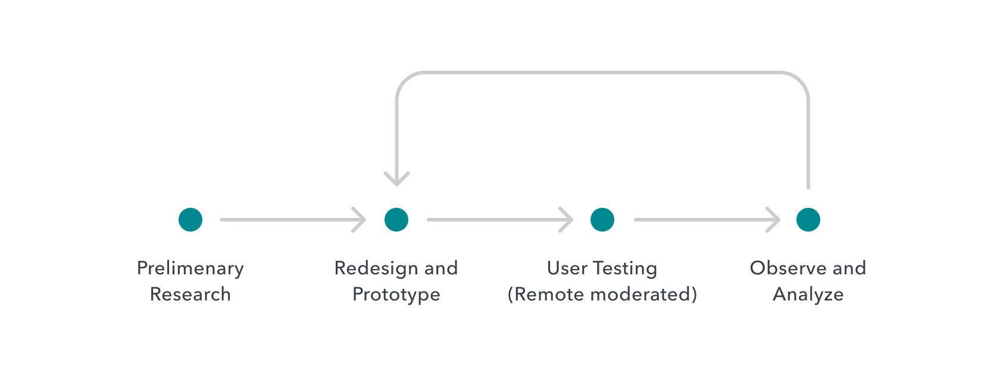
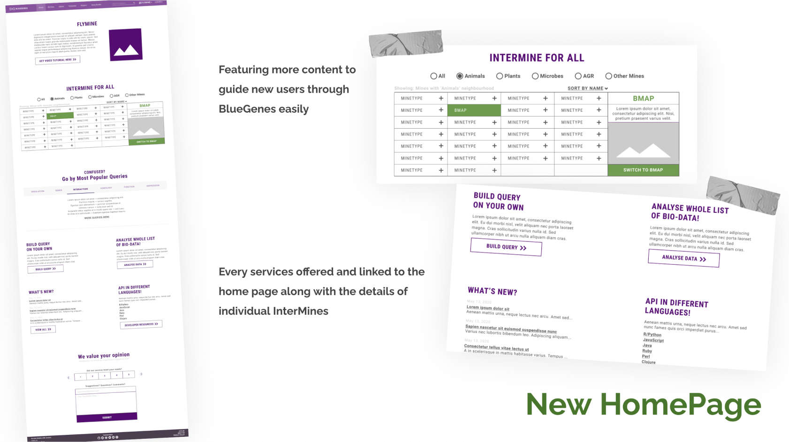
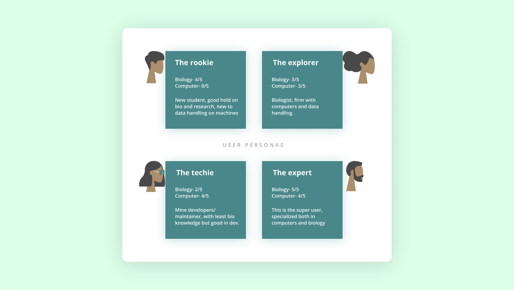

BlueGenes Redesign
Role
UX/UI Designer and Researcher
Timeline
May - August 2020
Worked with
Yo Yehudi (Outreachy Mentor)
Kevin Herald (Outreachy Mentor)
Methods & Tools
Remote Moderated Usability Testing, Competitive Analysis, Figma, Invision, Google Docs & Forms, Hotjar.
Practices
User Research & Thinking, Usability Testing, UX & UI Design, Prototyping, Design Principles.
1. Context
The project is about redesigning the interface of InterMine Org, an open-source community focussed on integrating/operating biological data sources. As an Outreachy intern, I collaborated with the InterMine community to improve the usability and overall experience of this new platform for its launch - later the year.

Outreachy is an initiative that provides paid, remote internships to people subject to systemic bias and impacted by underrepresentation in tech. industry worldwide.
2. The what and why?
Now, InterMine is a very broad term also defined as a system “integrating biological data sources around the world, making it easy to query and analyze data“ plus it is open-source! In short, there are many InterMines worldwide- covering a broad range of organisms and life science research areas, through the help of which several data analysts, biologists, pharmacists, and scientists carry out their day-to-day operations.
Until now, there were individual organism-specific InterMines present, meaning no single interface integrating them all into one and so making it hard to enter different mines and operating at them individually, here enters BlueGenes 🚀
Main objective is-
Creating BlueGenes aimed to provide an interface, a platform, and a medium through which open-source scientific data could be accessed and could be operated and analyzed and upon.
And so, my work here was to redesign this interface to make it optimal for its users by performing heuristic analysis, collecting insights by conducting remote user testing, and defining challenges simultaneously while collaborating with the InterMine community as well.
3. The Redesign Process
For the fact I know, there is no linear design process that can ever be “followed” and is always full of surprising turns and design decisions that one has to confront along the process. As for me, I tried to define my workflow below.
A rough structure of the design process I followed throughout.
Some key insights I found were-
That the integrated biological data sources like InterMines are used often for day-to-day purposes. Kicking off- I made a list of our target users and after some research, I jot down a few yet worth mentioning points concerning our users:
- Our target users were the organizations, firms, and individuals dealing with biological data sources at any level such as scientists, pharmacists, biologists, students, etcetera.
- Designing for “business” people is not the same as designing for the b2c sector is. These people are used to component-filled busy screens and simplifying it doesn’t solve. Before coming to any design decision one has to dive deeper into research.
- One should keep several things in mind, apparently smooth is easy for them so there is no need for baby-spooning these people as they are used to intake more at once.
STARTING WITH QUESTIONS
I started by assigning myself a couple of questions to get me better align our user’s task and goals:
- How do we validate our research findings and assumptions to gain upper hand on actual pain points faced by the users?
- How do we know what type of users need what kind of services and which guidance level?
- How will we drive the users to the most essential parts of the new system and how different is it?
- How might we provide them a tailored experience for first-time users and habitual ones?
Internal feedback!
After going through the questions with the team, I got more insights into our user’s demands and how they get the InterMine system’s vision. The purpose of this was to discover potential quick wins on simple improvements that could be executed quickly. As for the other questions, we also agreed on conducting User Testings once elementary issues are resolved, to get a better hold of the current situation.
Before interacting with our users and conducting tests, I decided on revamping the homepage for the fundamentals. This involved diving into similar products like Uniprot, NCBI, Ensemble, etc including articles, and I came up with the following draft-
4. Drafting, Scripting, and Testing!
I had the prototype ready and working and it was time to get ready with the script for the user testing, pre-test interaction, and post-test feedback too. To get to know users beforehand and to make them at ease, I sent an invitation email asking them for their background and work-related details.
Knowing our users.
First things first, I started by persona creation i.e listing the types of user and categorizing according to their profile and behavior, and demographics. After discussion with the team, I came up with four major persona — the rookie, explorer, techie, and the expert [description here]
I sketched the user flows for individual user personas and framing questions accordingly for each one of them.
Read the full description here.
REMOTE MODERATED USER TESTING. WOW!
Asking the right questions and above that getting users to express specifically can be the biggest of a challenge. Anyhow after getting post the tests I eye-witnessed the users which gave a pretty clear insight on things.
5. Iterate, iterate and iterate!
Based on all of our findings expressed above, I narrowed our focus into 4 areas for potential improvement:
- Making it presentable to the new users- home page, colors, new idea, and the notion of colors for intermines.
- Improve actionability- navigation, UX issues
- Improve data presentation- tables and queries
- Introducing new assistive panel concept
- Giving BlueGenes a face- logo design
REVAMPING LANDING PAGE
I used to make at least 3 to 4 versions of screens by sketching- to explore the breadth of solutions from going ahead with anything. After several hours of pixel pushing and seeking *inspiration* I was finally done with the designs of the landing page and overall navigation
ENHANCING DATA VISUALIZATION
I realized that ¾ users had difficulty dealing with the data visualization part. They wanted more details on the data that is presented in charts and graphs and other libraries. I wanted to display the data in a more visually appealing and digested manner, keeping in mind technical constraints.
BETTER NAVIGATION [NEW CONCEPT]
I also learned that most of the tasks conducted by the users won’t finish at a go and leaving it on the page possesses the risk of losing progress. We decided to include a sidebar of quick links that organizes the frequently visited and the recently half-finished tasks.
CREATING THE FACE OF BLUEGENES
This was one of the unsolicited tasks I did as an intern. This was a new experience launch altogether and I thought it is a needed requirement for a logo, so I presented the team with 2-3 designs of which one got approved later. I’m glad I got a chance to do this!
BlueGenes logo design - the new face
Read about the details on Figma 🔗
Closing notes :)
Over the last few weeks, I had another round of user testing to get the feedback and I found out that usability increased from 30% to 80% when tested for new and updated features. All my contributions are available at Github.
We are super excited to announce that the new user interface BlueGenes has been released!!! 🎉🎉🎉
— InterMine (@intermineorg) April 23, 2021
All the details in the blog post https://t.co/NjwhDKsAE7
Later the year 2021, BlueGenes 1.0.0 went live🎉